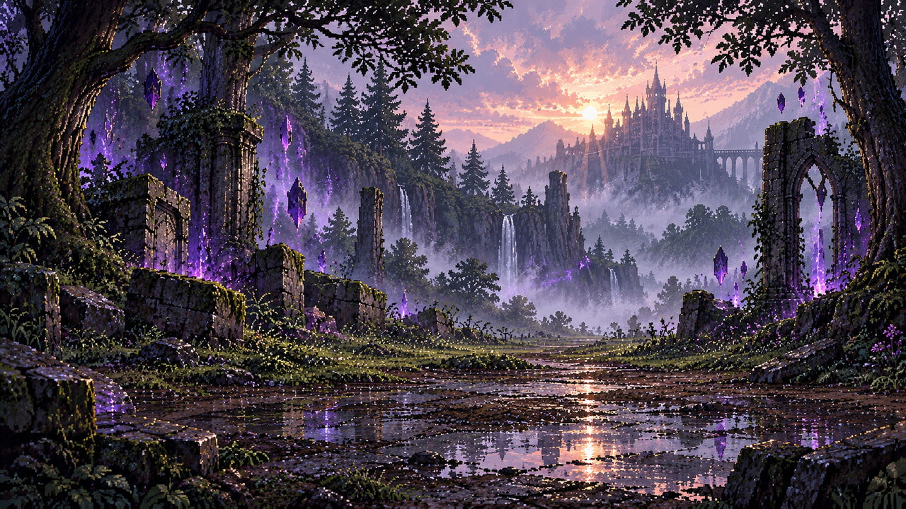
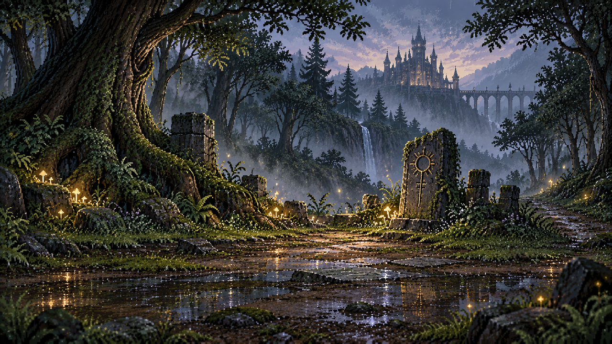
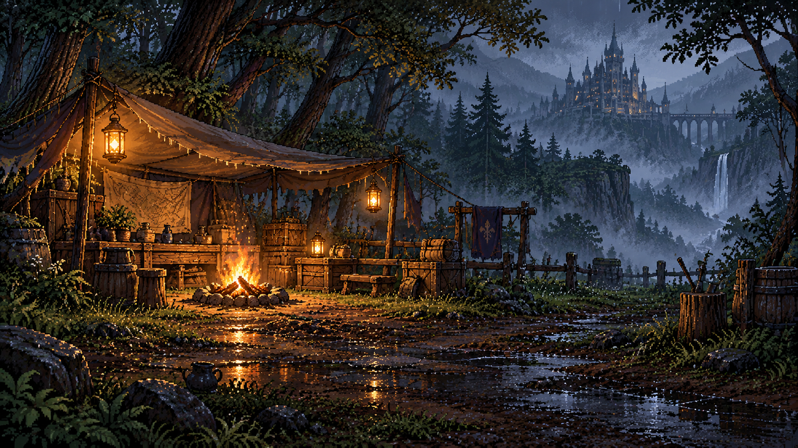
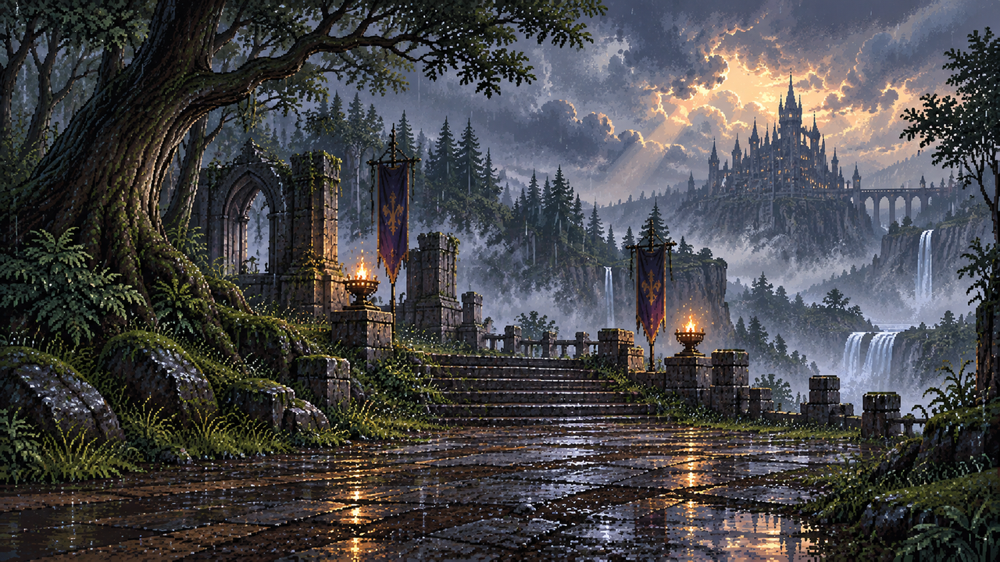

Lote 05 — candidatos, no activos
despertar_bosque_ruinas_arcanas

PENDIENTE: prologo.despertar.0-.2 ya tiene fondo HD explicito camino_lluvioso del Lote 01; candidato no puede reemplazarlo. El castillo y las ruinas arcanas tampoco se afirman en el dialogo.
Captura sobre escena existente (1280x800)
SHA256 66e7780775925ffc2c803c4946012fd57eb0820aed6002805b024ff67f69ba67claro_pik_piedra_antigua

PENDIENTE: prologo.despertar.6-.11 (aparicion/advertencia de Pik) usa el HD explicito protegido del Lote 01. No hay otro encuentro de Pik sin esa asignacion.
Captura sobre escena existente (1280x800)
SHA256 6403adf77daade5bbf1164395eafd98737b775d6d714ead1430a400b5c6ff1dbrefugio_nara_campamento

PENDIENTE: prologo.nara y explicacion usan clave compartida campamento, pero el dialogo no confirma este refugio concreto y la imagen agrega un castillo lejano. No aplicar globalmente ni a epilogos.
Captura sobre escena existente (1280x800)
SHA256 3af827ee84d69c8ce74540338be6592152e7ea02cfe1b1fd0f812abbb34a7564mirador_bosque_castillo_lluvia

PENDIENTE: Las escenas de camino son genericas y la aparicion del castillo no tiene callsite narrativo/geografico inequívoco. Mantener las variantes y el HD aprobado.
Captura sobre escena existente (1280x800)
SHA256 a8f188f58a119148b89fd910af8c31307104b7dea936fbead91d927f22e198a1